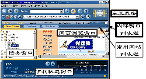
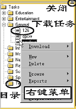
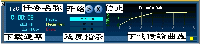
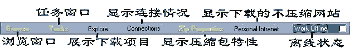
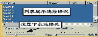
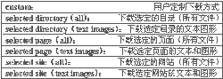
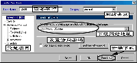
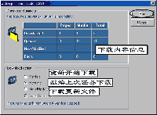

|
|
| 当前位置：电脑报电子版 > 1999 年 > 34 期 > 软件世界 > WebZip上手指南 |
| 《 WebZip上手指南 》 |
| 离线浏览，就是将因特网上的网站内容整体或部分复制到本机的硬盘，这样就可以方便地随时查看。离线浏览不但可以节省上网的费用，而且可以保存网页信息以供随时查用。 如果你是一个网虫，如果想在网上多看些东西，就要多花时间，但这也就意味着掏出大把钞票；要么就加快线上浏览速度，但这样一来就来不及仔细阅览站点了。 离线阅览倒是个好办法，但无论是IE，还是Netscape的内置离线浏览功能都太弱了。但只要拥有一个强大的离线阅览器——比如WebZIP，所有的问题都解决了。 WebZIP不但可以将网站部分或者全部下载到你的硬盘里，它还可以将这些下载的文件用压缩格式储存起来以节约空间，然后用WebZIP内置的浏览器或者是诸如IE或Netscape慢慢地欣赏了。下面，让我们一起步入WebZIP的世界。 一、如何获得WebZIP 最直接的方法是登录到http:∥wwwspidersoftcom，这里是WebZIP的“大本营”，你可以下载WebZIP的最新版本。国内的各大软件下载网站也都有WebZIP的下载。当然，从不少电脑报刊杂志的配套光盘里也能找到它，比如在最近一期的《电脑报配套光盘》里就可以找到WebZIP 30版。注意，WebZIP是一个共享软件，试用期28天。目前的最新版本是30 Beta 4，下载软件大小为11MB。二、安装WebZIP 通常，从网上下载的WebZIP文件是webzipexe执行文件，这是一个自解压文件，双击这个文件，就可以进行安装了，这和其它软件的安装方法没什么不同，安装过程很简单，几乎不需要设置，就可以完成安装。如果获得的是webzipzip文件，那么就应该先利用WinZip之类的软件将其解压到某个临时目录，比如c:\windows\temp，然后再进行安装。三、程序界面 WebZIP的功能相当丰富，许多功能的操作又有多种方法。为了实现这些功能，WebZIP的界面就设计得相当复杂，并且界面可以根据需要添加或减少内部子窗口。启动WebZIP后，首先出现一个蓝色的对话窗口，要求使用者注册。点击“Continue”，弹出一个非常华丽的窗口界面，这个界面是WebZIP默认的启动界面（图1），其中有三个内部子窗口：任务窗口、网页浏览窗口、下载状态窗口。这三个窗口可以关闭，或者调整大小和位置，也可以添加另外的子窗口（如连接提示窗口、网页文件列表窗口等）。界面中的工具栏、内部窗口列表栏和菜单栏等都是固定的。 1主工具条 主工具条在菜单栏的下面，分为功能按钮和输入栏，式样比较特别（图2）。 工具条中的按钮分为四类，其中设置下载模式类按钮可以选择压缩下载模式（“WebZIP Mode”——将下载文件压缩存放在“c:\porgram files\webzip\dowanloads”目录下，供个人使用）和共享模式（“personal intrant mode”——不压缩下载文件，将下载的文件存放在“c:\My Intranet”目录下，供企业内部intranet共享使用，当然也可以自己使用）。 工具条中还有两个输入栏：下载网页地址栏“address”（填写欲下载的网页地址）和下载类型选择“Profile”（用来设定需要下载的文件类型，有一个下拉菜单供你选择下载文件的类型，参见表1）。只需要在两个栏中填写上网站地址和选择下载类型，点击下载按钮（在工具条的右下角），即可开始下载。 2任务窗口 任务窗口是WebZIP的重要窗口（图3），许多重要操作都可以通过任务窗口来完成。WebZIP预先在任务列表窗口中建立了网站分类目录，你可以选择使用某个目录，如在“Sport”（运动）下建立网站下载任务。在任务窗口中，点击鼠标右键，可以进行新建下载任务、浏览下载的网站（或网页）、设置下载任务等诸多操作。 3．下载状态窗口 在屏幕的底部，是下载状态窗口（图4），该窗口可以监视WebZIP下载网站的过程，也提供了工具按钮实现下载过程的监控操作。 4．其他窗口 WebZIP界面中除了上面介绍的几个子窗口，还有网页浏览窗口（用于浏览网页，使用的是IE的内核），这几个窗口是常用的窗口，WebZIP默认启动的窗口。当然，你可以将不需要的子窗口关闭。另外WebZIP还提供了几个子窗口，用于实现特定的功能。但由于屏幕大小的限制，它们通常并不会完全展现出来，你需要点击窗口列表栏中的按钮来打开或关闭（图5）。在WebZIP隐藏的子窗口中，比较重要的窗口是显示连接情况的子窗口，该子窗口可以设置WebZIP在下载网站的时候建立几个连接，以及下载网站内容的优先次序（图6）。 四、使用向导设置网站下载任务 通过WebZIP下载网站的操作方法非常多，至少有三种方法开展下载网站或网页的工作。1．通过主工具条 在主工具条上输入你想下载的Web站点的链接（URL）地址。 在Profile栏的下拉菜单里选择你想下载的部分（文本、图像或者是整个网站等）。 选择储存模式 (Zip方式或Intranet方式)。 点击下载（Download）按钮开始下载。 2．使用拖拽 从浏览器，例如Netscape Navigator 或者 Internet Explorer上拖拽链接到WebZIP的拖拽区上。 从弹出的“Use the WebZIP Task Wizard” （使用WebZIP任务向导）窗口中设置下载任务。 3通过任务向导 通过任务向导来建立下载任务是最常用最方便的方法。 选择菜单“Task/New/Task”，弹出下载任务设置窗口。如果要建立一个压缩下载的任务，可以在“Zip”菜单中选择“Task/New/”。也可以通过任务栏的右键菜单，工具栏的新建按钮开始建立一个下载任务。 程序弹出下载任务设置窗口，在该窗口中设置下载任务的基本参数，如任务名，链接地址等（图7）。 选择窗口中的“设置项目”列表栏中的“Save To”，设置下载的网页保存的地址，默认目录为“C:\My Intranet”，如果要将下载的网页保存到压缩包中，可以选择“Download and Zip this Website”，然后选择某个压缩包。建立压缩包可以在压缩包特性窗口中进行。 选择“设置项目”列表栏中的“Download Method”项目，选择下载网站的类型，可以通过“Profile”下拉菜单选择要下载文件的类型（参见表1）。也可以不选择，通过下面步骤来具体设置。 可以在“设置项目”列表栏中将“Download Method”项目打开，分别具体地设置下载网站的内容， “Filetypes”项选择下载的文件类型，“Followed Links”项设置链接限制，“URL Filters”项设置链接过滤，“Advanced”项是一些高级选项设置，可以不加变动。 在“设置项目”列表栏中选择“Schedule”项，设置是否计划下载。 点击界面中的“Run Now”按钮，可以立即开始下载，下载过程中可以打开其他辅助窗口查看下载情况，点击工具条中的“Brown”按钮，可以查看下载的网页情况。 点击界面中的“OK”按钮，可以将下载任务保存，然后在合适的时候在“任务窗口”选择该下载任务，然后点击下部的状态条的开始下载按钮，程序弹出下载方式选择按钮，点击“Run”开始下载（图8）。也可以在“任务窗口”中通过右键菜单启动下载。 WebZIP总的来说是个非常棒的离线阅览工具。其实使用它并不需要掌握上面的一大堆东西，只要了解几个常用按纽和设置下载任务的操作即可。愿你在使用WebZIP时，能在有限的上网时间里浏览到更多的网站。 (南京 张胤) |
| 下载本期推荐软件 | 页 首 |
| 《电脑报》版权所有，电脑报网站编辑部设计制作发布 |